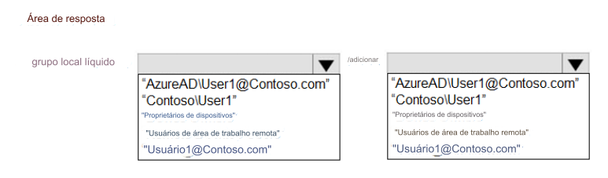

232- PONTO DE ACESSO
Você tem um locatário do Azure AD que contém o seguinte:
• Dispositivos Windows 11 associados ao Azure AD
• Um usuário que tem um nome de exibição User1 e um UPN user1@contoso.com
Você habilita a Área de Trabalho Remota nos dispositivos Windows 11.
Você precisa garantir que o Usuário1 possa usar a Área de Trabalho Remota para se conectar aos dispositivos.
Como você deve completar o comando que deve ser executado em cada dispositivo? Para responder, selecione
as opções apropriadas na área de resposta
NOTA: Cada seleção correta vale um ponto.
